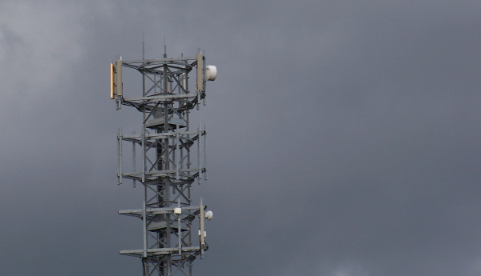

Numericable - SFR chaboulent tout à la Réunion
L’actualité internet de ce mois a lieu en métropole. En effet SFR s’est fait racheté par Numéricable en octobre 2014. Altice, la maison mère du cablo-opérateur s’était déja porté aquéreur d’Outremer Telecom (les forfaits Only) en 2013 et de Mobius (les forfaits iZi) en janvier 2014.
Le patron du groupe Altice, Patrick Drahi va fusionner les offres partout où c’est possible pour créer un grand groupe de télécommunication français. On assiste à une redistribution des cartes dans le marché Internet et de la téléphonie mobile à la Réunion mais aussi dans tout l’Océan Indien. Il n'est pas certain que cela soit toujours au bénéfice des usagers.
SRR, la SFR réunionnaise
À la Réunion, SFR est le premier opérateur mobile du département avec la SRR (Société Réunionnaise de Radiotéléphonie). Dans les années 90, quand les investissements étaient trop importants pour le nombre limité de clients, c’est la région Réunion qui a dût lancer un appel d’offre pour attribuer le marché de la téléphonie mobile de l’île. Contrairement aux autres DOM, ce n’est pas l’opérateur historique (France Telecom) qui a emporté le marché. SRR, filiale de SFR a donc été le premier et seul opérateur de l’île jusqu’en 2000, année de l’arrivé de France Telecom (avec Itineris et Wanadoo), aujourd’hui Orange. Aujourd’hui SRR est encore le leader et détient plus de 60% du marché. C'est donc un gros bout du gâteau que veut Patrick Drahi.
L’autorité de régulation de la concurrence a jugé que la fusion de deux des trois réseaux de téléphonie mobile de la Réunion, totalisant 70% du marché, n’était pas bonne pour maintenir un marché sain. Elle a assujetti le rachat de SFR à, entre autres, la revente d’Outremer Telecom pour l’île de la Réunion et Mayotte (sur l'île mahoraise où SFR était seul jusqu'en 2006, les deux opérateurs rassemblent 90% du marché). Altice a accepté de se séparer de cette activité parce qu’elle veut conclure le rachat de SFR et que le fleuron d’Outremer Telecom est, avant tout, son marché aux Antilles que le groupe Altice pourra conserver.

Mat portant des antennes relais de réseaux mobiles (par thtkit)
Les forfaits yoyo d’Outremer Telecom
Les forfaits internet d’Outremer Telecom sont commercialisés à la Réunion sous la marque Only. C’était un opérateur alternatif intéressant à l’époque ou je faisais le point sur les offres ADSL de l’île. Il proposait aussi des offres box + téléphone mobile avec son propre résreau. Ces derniers temps les tarifs font même se retourner les endormis. Une augmentation soudaine s’appliquant à tout nouveau forfait ainsi qu’aux ancien forfaits. Suivit d’une baisse avec un retour au tarif normal dès le mois de février.
L’autorité de la concurrence s’est intéressée à cette soudaine augmentation. Certaines personnes allant même jusqu’à supposer que c’était une tentative de survalorisation des actifs de l’entreprise avant sa mise en vente. L’autre supposition est que cette technique aurait permis de faire venir les clients mécontent de cette hausse chez SFR qui est moins cher pour le moment. Toujours est-il que c’était trop gros et que début février, Outremer Telecom a annoncé revenir à l’ancien tarif. L'autorité de la concurence reste vigilente sur les conditions de cessions du réseau mobile d'Outremer Telecom jusqu'à ce qu'elle soit effective.
Les pratiques d'Altice
Numéricable est en bonne santé mais ce n'est pas vraiment le cas de SFR qui a perdu beaucoup de clients en 2014. Pour construire un nouveau groupe compétitif, Patrick Drahi a indiqué que sa nouvelle société allait devoir faire des économies. Pour cela, tous les moyens sont bons et le commité exécutif de la nouvelle entité a pour objectif de faire baisser les coûts de 30%. En interne ce n'est pas gai, il y a déjà eu 200 démissions depuis l'arrivée de ls nouvelle équipe mais les éconnomies se font aussi sur le dos des fournisseurs. Certains d'entre eux grincent des dents. Entre les impayés et les ruptures de contrat abusives, beaucoup sont remontés mais SFR est un gros client, tout le monde n’a pas les moyens d’aller en justice face à un gros. C’est bien là dessus que compte Patrick Drahi pour faire des économies. Une méthode de margoulin qui a fait ses preuves ailleurs.
Les sociétés de travaux, les marchands de matériels sont les premières victimes à se plaindre. Les plus petits accepteront rapidement de conceder des remises sur leurs offres pour conserver leur client, premier opérateur à la Réunion.
Les pratiques de la SRR
On pourrait croire que cette préssurisation des fournisseurs sera bénéficiaire aux clients et donc que la facture sera moins salée dans les mois qui viennent. Mais à la Réunion, on est plutôt habitué à ce que SRR, premier opérateur abuse de position dominante avec ses clients. En 2009, l’autorité de la concurrence a demandé a SRR de ne plus sufacturer ses clients quand ils passaient des apels vers d’autres réseaux comme Orange et Outremer Telecom. Trois ans plus tard la compagnie a ete condamnée `a 2 millions d’euros d’amende parce qu’elle ne s’est pas conforté à cette exigence. En 2014, statuant sur le fond, l’autorité a sanctionné SRR de presque 46 millions d’euros. Pendant ces 5 ans, les clients de SFR continuaient de payer trop cher certains de leurs appels, créant une impression que Orange et Outremet Telecom étaient plus cher que l'opérateur dominant.
Depuis cinq ans que ces opérateurs se plaignent, ils espèrent que ces pratiques cesseront avec cette redristibution des cartes. Il faudra auraravant qu'Outremer Telecom sorte du giron d'Altice pour que renaisse une réelle concurence.
La reprise d'Outremet Telecom
Sept candidats au rachat d’Outremer Telecom se sont pressés pour faire des offres au cablo-opérateur. La nouvelle a fait du bruit quand free, le maverick de l'Internet en France, s'y est intéressé en janvier dernier. Certains rêvaient déjà de voir arriver ses prix cassés sur le DOM le plus peuplé de France mais son offre n'a finalement pas été retenue. Dans le dernier carré figuraient :
- le groupe Oceinde, industriel réunionnais qui est déjà le champion de l'internet par la fibre à la Réunion avec Zeop ;
- le groupe Telma, opérateur historique malgache qui mettrait ainsi le pied dans les îles voisines ;
- les fonds d'investissement français Pechel industrie et le fond de capital risque Apax Partners.
Il est probable que la fusion de Zeop et Outremer Telecom aurait fait naitre un concurent trop sérieux à SFR que Patrick Drahi a voulut écarter. Quand aux capitaux risqueurs, l'incertitude quand à leur stratégie industrielle a peut ėtre fit hésiter le vendeur. C'est finalement Telma qui l'a emporté. L'Opérateur historique de la grande île est privatisé depuis 2004 et appartient maintenant au groupe Hindjee, présent dans plusieurs secteurs industriels dans la région. Le groupe doit maintenant préparer la stratégie de son arrivée sur le marché réunionnais de la téléphonie mobile.
Il faut encore que l'autorité de concurence donne son feu vert pour ce rachat. Les abonnés réunionnais auront encore à attendre un peu avant de découvrir les nouvelles offres de ce nouveau venu sur le marché.
Le nouveau Telecom Réunion Mayotte
Mise à jour d'octobre 2015 :
L'autorité de la concurence a bien autorisé ce rachat. Telma a depuis renommé la nouvelle entité Telecom Réunion Mayotte. Puis le 20 octobre, elle emmet un avis sur une nouvelle demande. Telecom Réunion Mayotte ne sera pas entièrement contrôlée par Telma puisqu'Iliad, la maison mère de free peut prendre 50% sous son contrôle. l'homme d'affaire Hassanein Hiridjee, propriétaire de Telma à Madagascar a fait ses armes en France, il a étudié à ESC Paris et nul doute que depuis qu'il est dans les affaires, il a rencontré Xavier Niel, le patron d'Iliad tout comme Patrick Drahi, le boss d'Altice.
Ce dernier a écarté l'offre de free il y a un an, craignant peut-être une concurence trop forte sur son marché fétiche. Il a préféré une entreprise régionale avec Telma. Éconduit par la porte, free revient par la fenêtre avec cette aliance qui permettra aux deux groupes de se soutenir sur un marché qui est nouveau pour les deux. Il est encore trop tôt pour savoir si le trublion des telecom de métropole saura faire baisser les prix comme tout le monde le souhaite sur les deux îles mais l'espoir est permis, c'est d'ailleurs ce que souhaite ouvertement l'autorité de la concurence dans son communiqué.